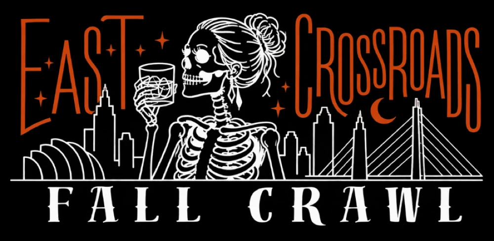

Kansas City
Thank you.
Fall Crawl 2026 is in the books. See you next fall.
- 800+ of you planned your night here
- 13 East Crossroads spots
- 1 wheel deciding where to go next
Thank You
To every spot that made the night.
- Beckett’s
- Chartreuse Saloon
- Cigar Box
- Grinders
- International Tap House
- Jade Jaguar
- King G
- MOD Gallery
- Ricochet
- Tannin
- Ted’s Taproom
- The Belfry Collective
- The Den
Rides by EZ Pedicabs. Word spread by KC Daily and InKansasCity.
Fall Crawl 2026
The map, the guide and Fall Crawl Roulette, kept as they were on crawl night.
Relive 2026